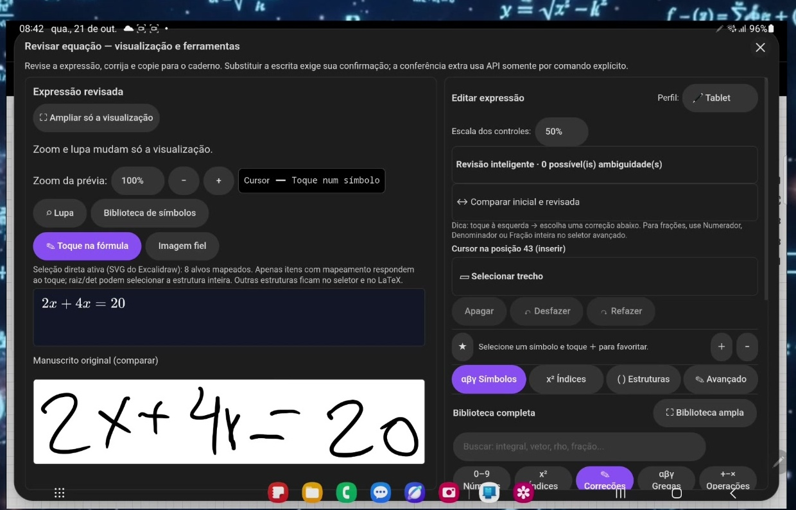
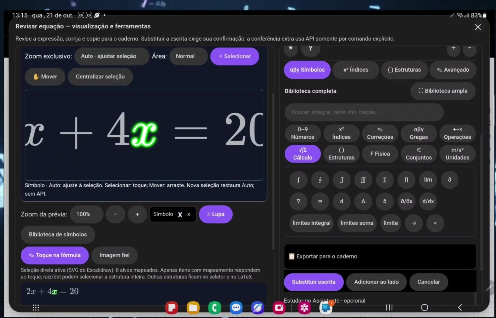
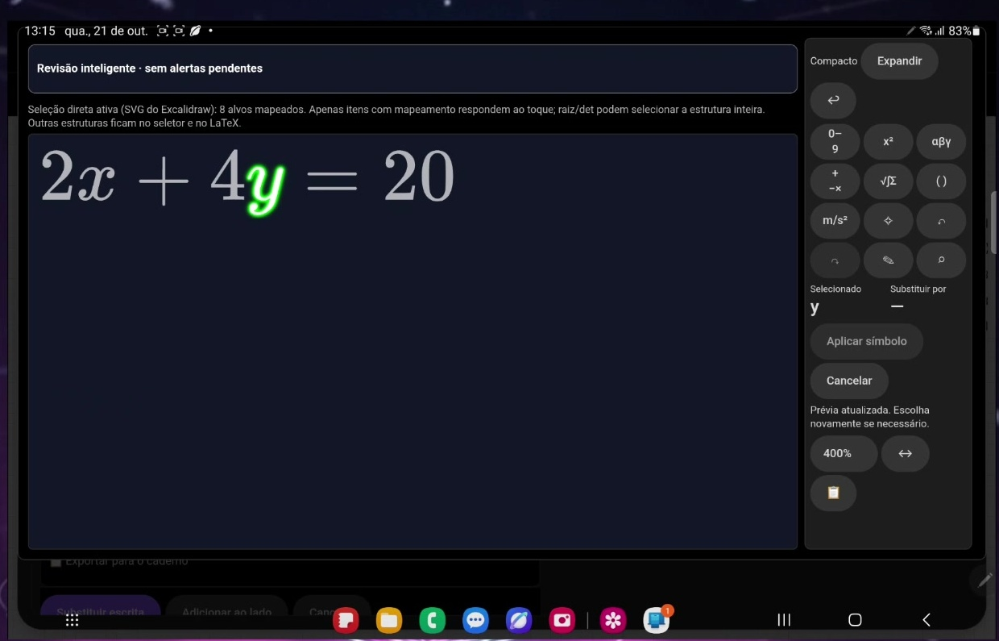
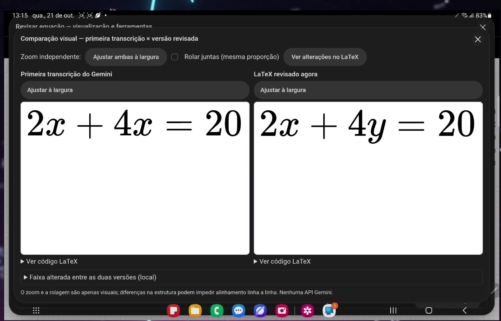
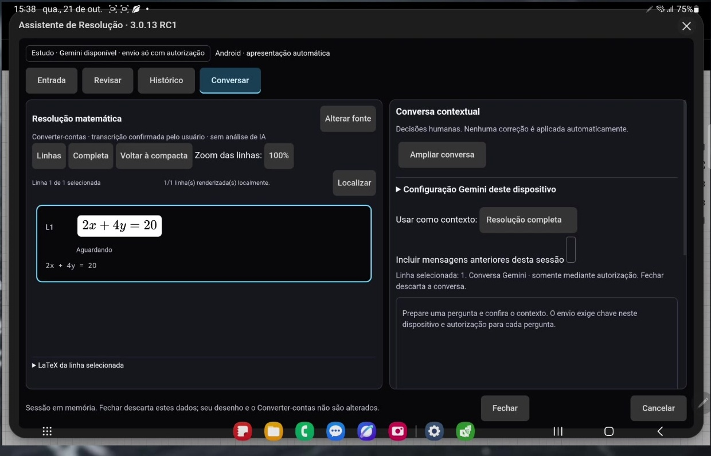
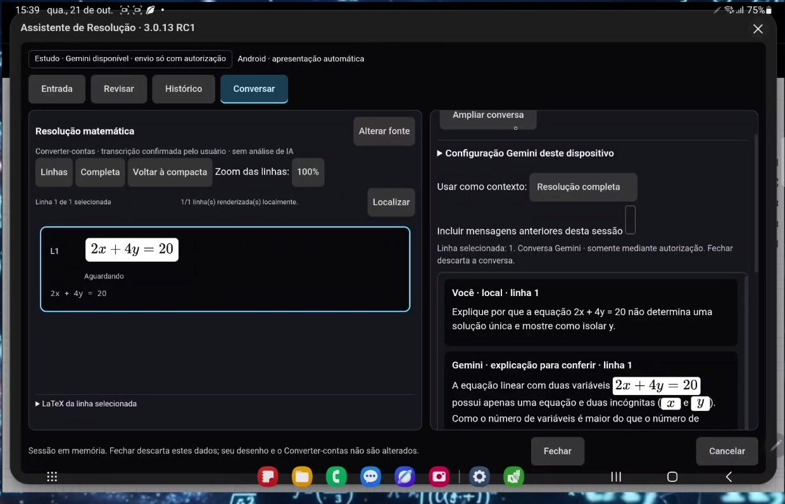

Guia de funções
Capturas reais do vídeo do pacote documentado Converter 2.9.21 RC2 e Assistente 3.0.13 RC1. As imagens ilustram o uso; confira os hashes do instalador correspondente antes de distribuir. Recortes sem alteração da interface.
Confira o reconhecimento
O manuscrito mostra 2x + 4y = 20, mas a primeira transcrição aparece como 2x + 4x = 20. Compare com o original antes de aceitar. Reconhecer não garante acerto.

Selecione e corrija um símbolo
Toque no símbolo mapeado da fórmula. A lupa amplia a seleção; a biblioteca reúne números, índices, letras gregas, operações e estruturas. Escolha a substituição e confira a prévia. A revisão e o zoom mostrados são locais.

Amplie para revisar
A visualização ampliada deixa a fórmula e os controles de seleção maiores. O quadro mostra y selecionado. Zoom não altera o valor da expressão. Se o toque não selecionar a estrutura desejada, use o seletor disponível ou a edição LaTeX.

Compare antes de aplicar
A comparação coloca a primeira transcrição ao lado da versão revisada: x foi trocado por y. Confirme cada alteração. No fluxo principal, escolha Substituir escrita, Adicionar ao lado ou Exportar para o caderno conforme seu objetivo; substituir exige confirmação.

Leve a expressão ao Assistente
A transferência é opcional e depende da sua confirmação. No Assistente, confira a fonte e a linha carregada. As abas Entrada, Revisar, Histórico e Conversar organizam o trabalho. Não confunda Histórico com garantia de conversa persistida: a tela avisa que fechar descarta a sessão.

Pergunte com contexto
Escolha a linha ou a resolução completa e revise a pergunta. Mensagens anteriores são opcionais. O envio à Gemini exige elegibilidade e autorização; não é uma função local. Confira a explicação: a IA pode errar e não aplica correções automaticamente.

Uso e elegibilidade
Seleção, lupa e comparação são locais sobre expressão carregada. Reconhecimento e conversa por Gemini exigem serviço externo. A API exige 18+ e veda clientes voltados ou provavelmente acessados por menores; não presuma elegibilidade de todo estudante. Chave pessoal não elimina as restrições. Não envie dados confidenciais; confira as respostas.
Termos oficiais Gemini API. Consulte README_INSTALACAO.md para instalar somente uma entrega aprovada e fazer o teste inicial sem API.